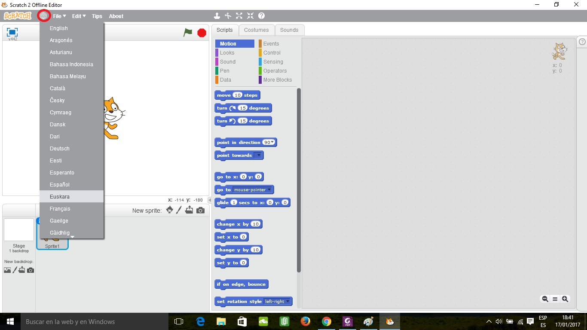
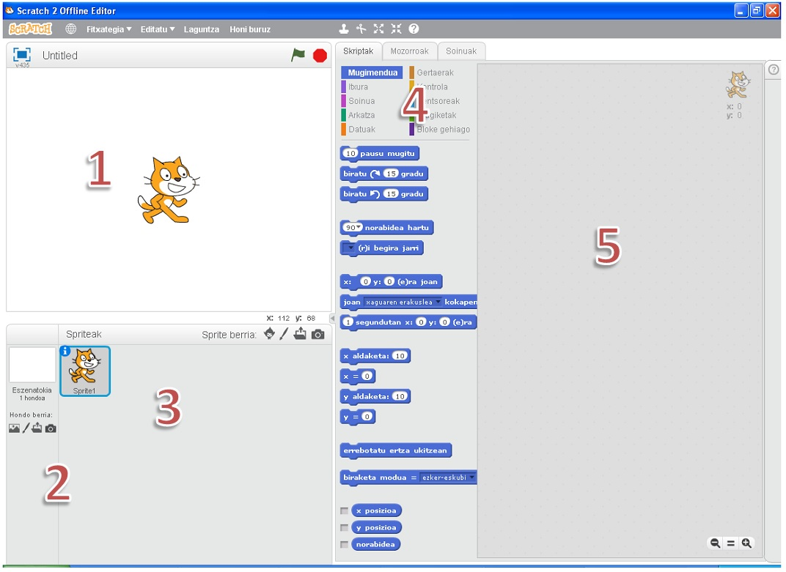
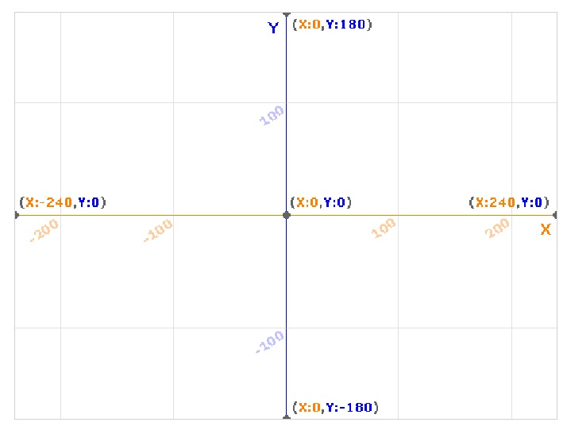
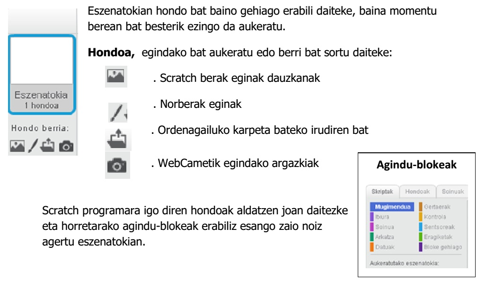
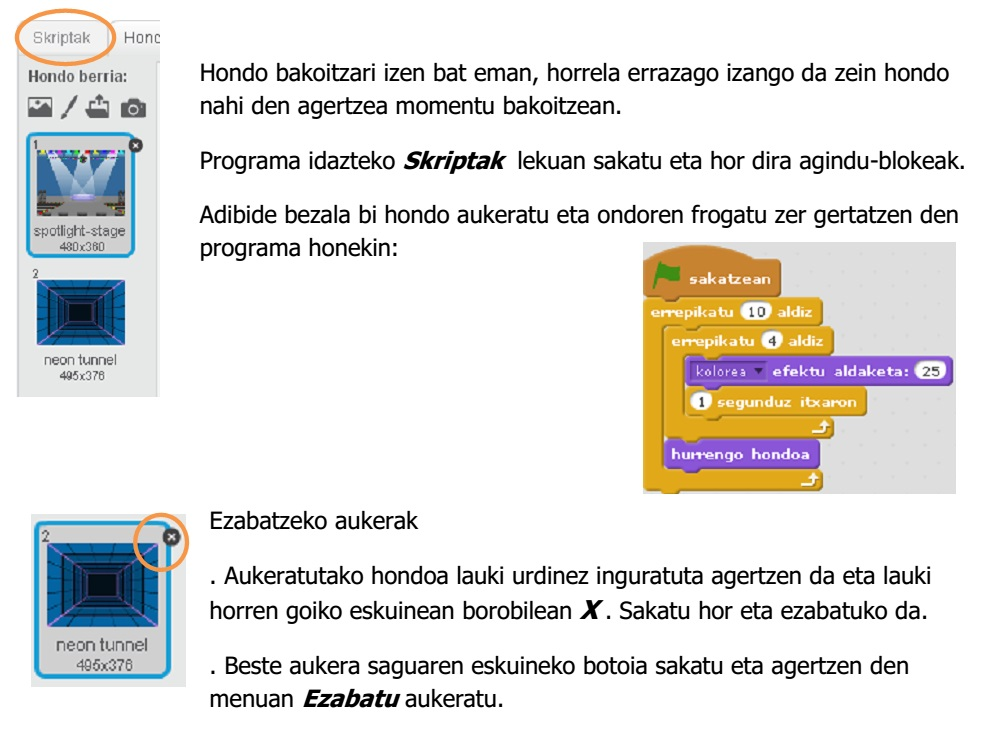
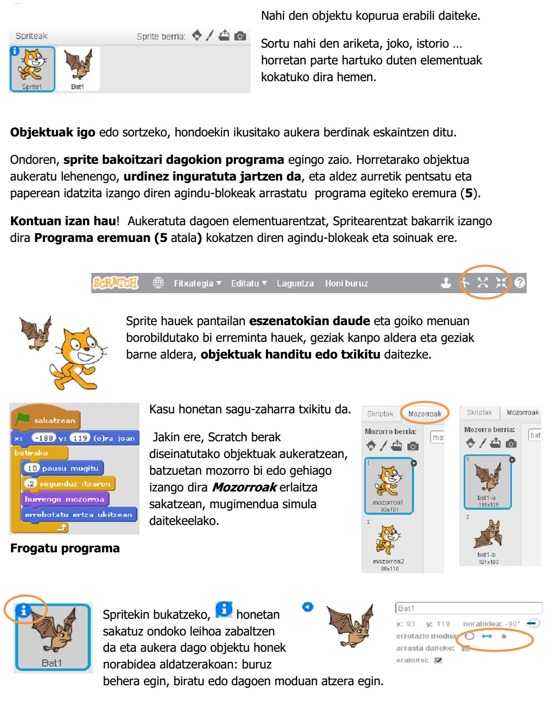
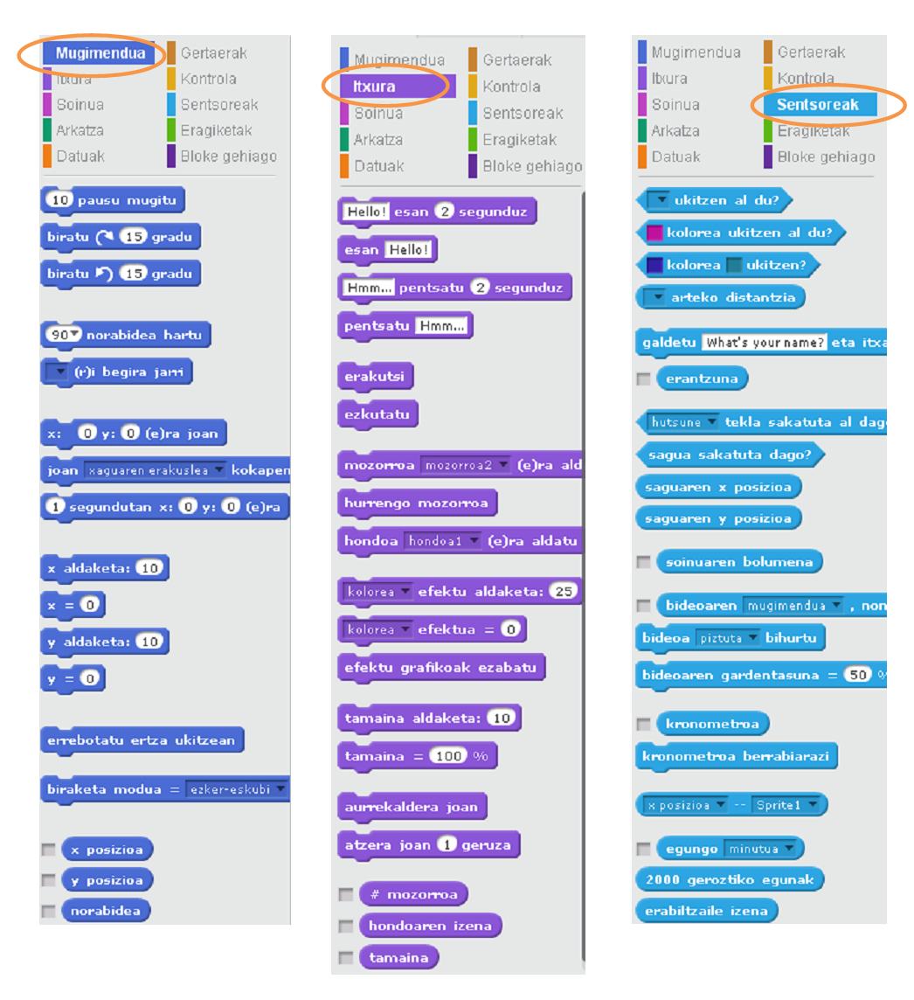
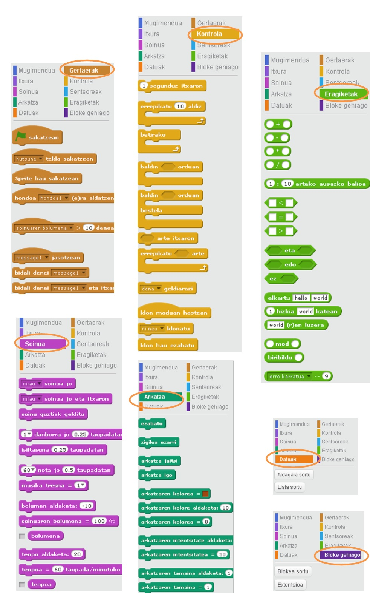

Scratch
Instalatu Scratch
Ikastaro honetan Scratch offline editorea erabiltzen ikasiko dugu. Hasteko, nahiz eta ikastetxeko ikastetxean instalatuta daukazuen, komeni da zuen etxeetan deskargatu eta instalatzea beronekin lan egiteko. Deskargatzeko klikatu ondorengo estekan.
Hasierako Pantaila
Hasiera baten agian Scratch ingelesez edukiko duzue, lehenengo lana hau euskeraz jartzea izango da horretarako sakatu gorriz markatutako globoan eta aukeratu Euskera. Hurrengo irudian azaltzen den bezala:

Azter dezagun hasierako pantailan dituzuen elementuak:

- Eszenatokia: Hemen azalduko dira 2 eta 3 eremutan aukeratutako hondoa eta objektuak
- Hondoa: Hemen aukeratutako irudia Eszenatokian ikusiko da
- Spriteak, objektuak: Eszenatokian agertuko dira eta aginduekin egindako programak diona egingo dute
- Agindu-blokeak: Programa egiteko erabili daitezkeen agindublokeak multzoka: Mugimendua, Itxura, Gertaerak, Kontrola …
- Programa egiteko eremua: Agindu-blokeak arrastatu eta kokatzeko lekua. Sprite bakoitzak bere programa izango du.
Erabilgarriak izan daitezke ere hasi edo uzkurtu herramientak spriteak nahi dugun tamainara egokitzeko:

1. Eszenatokia
Eszenatokiaren neurriak eta posizioak ondoko irudian daude.
Spritea edo objektua kokatzeko lekuak X eta Y ardatzen balioak jarriz lortuko da.

Katua arratoiarekin mugiarazten baduzue, ikusiko duzue nola bekaldean X eta Y koordenatuak mugitzen diren animaizo honetan ikus dezakezuen bezala. Konturatzen bazarete aginduaren koordenatuak katuaren posizioaren arabera aldatzen dira. Agindu honen bitartez sprite-a edozein koordenatutan kokatu ahal izango dugu.

2. Hondoa


3. Sprite-a edo Objetua

4 Aginduak
Aginduak Blokeka daude antolatuta. Ondorengo irudian dituzue gehien erabiliko dtugun aginduen zerrenda:

Ikasi al duzu zerbait? Saiatu honekin!!
5. Hasi gaitezen programatzen!
5. elementua programa idazteko eremua da. Gogoratu sprite bakoitzak bere programa izango duela. Azter ditzagun modu praktikoan hainbat adibide.
Obra publicada con Licencia Creative Commons Reconocimiento Compartir igual 4.0